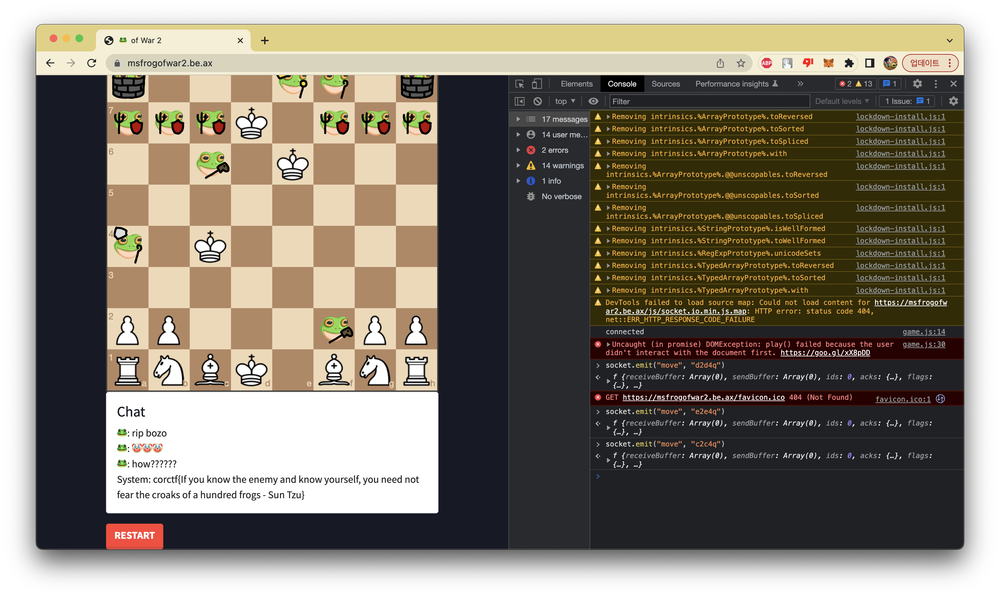

2023 Corctf
With Team “cat :flag_kr:”
crypto - eyes
main.sage
from Crypto.Util.number import bytes_to_long, getPrime
# my NEW and IMPROVED secret sharing scheme!! (now with multivariate quadratics)
with open('flag.txt', 'rb') as f:
flag = f.read()
s = bytes_to_long(flag)
p = getPrime(len(bin(s)))
print(p)
F = GF(p)
N = 1024
conv = lambda n: matrix(F, N, 1, [int(i) for i in list(bin(n)[2:][::-1].ljust(N, '0'))])
A = random_matrix(F, N, N)
for i in range(0, N):
for j in range(0, i):
A[i, j] = 0
B = random_matrix(F, N, 1)
C = matrix(F, [F(s)])
fn = lambda x: (x.T * A * x + B.T * x + C)[0][0]
L = []
for i in range(7):
L.append(fn(conv(i + 1)))
print(L)
This is a challenge that constructs a 1024 * 1024 matrix on GF(p).
And we know the result of some result of front multiplication and back multiplication combined.
That gives us info about 9 values inside matrix A.
Playing with those values easily leaves us the flag value.
ex.py
p = ...
L = [...]
L = [0] + L
flag = ((L[7] - L[1] - L[2] - L[4]) - (L[3] - L[1] - L[2]) - (L[5] - L[1] - L[4]) - (L[6] - L[2] - L[4])) % p
from Crypto.Util.number import *
print(long_to_bytes(flag))
corctf{mind your ones and zeroes because zero squared is zero and one squared is one}
crypto - fizzbuzz100
fizzbuzz100.py
#!/usr/local/bin/python
from Crypto.Util.number import *
from os import urandom
flag = open("flag.txt", "rb").read()
flag = bytes_to_long(urandom(16) + flag + urandom(16))
p = getPrime(512)
q = getPrime(512)
n = p * q
e = 0x10001
d = pow(e, -1, (p-1)*(q-1))
assert flag < n
ct = pow(flag, e, n)
print(f"{n = }")
print(f"{e = }")
print(f"{ct = }")
while True:
ct = int(input("> "))
pt = pow(ct, d, n)
out = ""
if pt == flag:
exit(-1)
if pt % 3 == 0:
out += "Fizz"
if pt % 5 == 0:
out += "Buzz"
if not out:
out = pt
print(out)
We can easily decrypt flag from the case when flag isn’t a multiple of 3 or 5.
ex.py
from pwn import *
io = remote("be.ax", 31100)
io.recvuntil("n = ")
n = int(io.recvline())
io.recvuntil("e = ")
e = int(io.recvline())
io.recvuntil("ct = ")
ct = int(io.recvline())
to_send = pow(2, e, n) * ct
to_send %= n
io.sendline(str(to_send))
io.recvuntil("> ")
flag_2 = int(io.recvline())
from Crypto.Util.number import *
print(long_to_bytes(flag_2 // 2))
io.interactive()
corctf{h4ng_0n_th15_1s_3v3n_34s13r_th4n_4n_LSB_0r4cl3...4nyw4y_1snt_f1zzbuzz_s0_fun}
crypto - fizzbuzz101
fizzbuzz101.py
#!/usr/local/bin/python
from Crypto.Util.number import *
from os import urandom
flag = open("flag.txt", "rb").read()
flag = bytes_to_long(urandom(16) + flag + urandom(16))
p = getPrime(512)
q = getPrime(512)
n = p * q
e = 0x10001
d = pow(e, -1, (p-1)*(q-1))
assert flag < n
ct = pow(flag, e, n)
print(f"{n = }")
print(f"{e = }")
print(f"{ct = }")
while True:
ct = int(input("> "))
pt = pow(ct, d, n)
out = ""
if pt == flag:
exit(-1)
if pt % 3 == 0:
out += "Fizz"
if pt % 5 == 0:
out += "Buzz"
if not out:
out = "101"
print(out)
Now, the result doesn’t give any information of the decrypted flag, except for whether it’s divisable with 3, 5.
This is a famous LSB oracle challenge, but I always ironically had a difficult time implementing it :((
We can know whether flag * k is divisible of 3 or 5. I was surprised that FizzBuzz is an actual existing thing with the same rule.
My idea was to reconnect until flag is relatively prime to 15.
When I know [flag * k, flag * (k + 1) ... flag * (k + 14)], exactly one of them must result to “FizzBuzz”. With that we can discover (flag * k) % 15.
Of course, we don’t know the result for flag % 15, so we have to try all 8 ([1, 2, 4, 7, 8, 11, 13, 14]) cases.
Only one case out of 8 possibility has the possible root.
ex.py
from pwn import *
from Crypto.Util.number import *
from tqdm import tqdm, trange
io = remote("be.ax", 31101)
# io = process(["python3", "fizzbuzz101.py"])
io.recvuntil("n = ")
n = int(io.recvline())
io.recvuntil("e = ")
e = int(io.recvline())
io.recvuntil("ct = ")
ct = int(io.recvline())
io.sendlineafter("> ", str(ct * pow(2, e, n)))
if b"zz" in io.recvline()[:-1]:
print("unlucky")
exit()
def get10(to_send):
l = len(to_send)
for k in to_send:
for i in range(15):
io.sendline(str((pow(k + i, e, n) * ct) % n))
ret = []
for t in range(l):
res = io.recvlines(15)
for i in range(15):
if b"FizzBuzz" in res[i]:
ret.append((15 - i) % 15)
break
assert len(ret) == l
return ret
def get(to_send):
res = []
tt_send = to_send[:]
while len(tt_send):
print(len(tt_send))
res.extend(get10(tt_send[:10]))
tt_send = tt_send[10:]
return res
tot_len = 1000
to_send = []
for i in range(tot_len):
to_send.append(2**(i + 1))
res = get(to_send)
bs = [1, 2, 4, 7, 8, 11, 13, 14]
res_ind = []
for i in range(8):
res_ind.append([])
for i in range(tot_len):
for j in range(8):
res_ind[j].append((res[i] * bs[j]) % 15)
for i in range(8):
st = 0
cur = res_ind[i]
suc = True
for j in range(tot_len - 1):
new_st = (cur[j] * 2 - cur[j + 1]) % 15
if new_st > 1:
suc = False
break
st = 2 * st + new_st
if suc:
print(st)
flag = st * n // 2**tot_len
print(long_to_bytes(flag))
io.interactive()
corctf{''.join(fizz_buzz(x) for x in range(99, 102)) == "FizzBuzz101" == cool_username}
crypto - fizzbuzz102
fizzbuzz102.py
#!/usr/local/bin/python
from Crypto.Util.number import *
from os import urandom
from secrets import randbits
flag = open("flag.txt", "rb").read()
flag = bytes_to_long(urandom(16) + flag + urandom(16))
p = getPrime(512)
q = getPrime(512)
n = p * q
e = 0x10001
d = pow(e, -1, (p-1)*(q-1))
assert flag < n
ct = pow(flag, e, n)
a = randbits(845)
b = randbits(845)
b = 15 * (b // 15)
while a % 3 == 0 or a % 5 == 0:
a += 1
def lcg(x):
return (a * x + b) % n
print(f"{n = }")
print(f"{e = }")
print(f"{ct = }")
print(f"{a = }")
while True:
ct = int(input("> "))
pt = lcg(pow(ct, d, n))
out = ""
if pt == flag:
exit(-1)
if pt % 3 == 0:
out += "Fizz"
if pt % 5 == 0:
out += "Buzz"
if not out:
out = "101"
print(out)
Now, LCG is added to fizzbuzz101.
I struggled a bit at first, but we can solve this one totally freely with applying 101’s method two times.
b shifts result mod 15, and I was too lazy to deal with all cases, so I just reconnected until b % 15 == 0.
First, we can discover a, because we can know k * a’s fizzbuzz result, it is exactly same with 101.
Second, by multiplying inverse of a when sending, the second step is exactly same with 101 too.
Both a and flag has to be relatively prime to 15, so the success rate is (1/15) * (8/15)^2.
Which is around 1/60.
ex.py
from pwn import *
from Crypto.Util.number import *
from tqdm import tqdm, trange
TEST = False
if TEST:
io = process(["python3", "fizzbuzz102.py"])
else:
io = remote("be.ax", 31102)
io.recvuntil("n = ")
n = int(io.recvline())
io.recvuntil("e = ")
e = int(io.recvline())
io.recvuntil("ct = ")
ct = int(io.recvline())
if TEST:
io.recvuntil("a = ")
a = int(io.recvline())
io.sendlineafter("> ", str(0))
if b"FizzBuzz" not in io.recvline()[:-1]:
print("unlucky")
exit()
io.sendlineafter("> ", str(1))
if b"101" not in io.recvline()[:-1]:
print("unlucky")
exit()
def get10(to_send):
l = len(to_send)
for k in to_send:
for i in range(15):
io.sendline(str(pow(k + i, e, n)))
ret = []
for t in range(l):
res = io.recvlines(15)
for i in range(15):
if b"FizzBuzz" in res[i]:
ret.append((15 - i) % 15)
break
# print(to_send)
# print(ret)
assert len(ret) == l
return ret
def get(to_send):
res = []
for i in trange((len(to_send) + 9) // 10):
res.extend(get10(to_send[i * 10:i * 10 + 10]))
# print(len(res))
return res
tot_len = 1200
to_send = []
for i in range(tot_len):
to_send.append(2**(i + 1))
res = get(to_send)
bs = [1, 2, 4, 7, 8, 11, 13, 14]
res_ind = []
for i in range(8):
res_ind.append([])
for i in range(tot_len):
for j in range(8):
res_ind[j].append((res[i] * bs[j]) % 15)
for i in range(8):
st = 0
cur = res_ind[i]
suc = True
for j in range(tot_len - 1):
new_st = (cur[j] * 2 - cur[j + 1]) % 15
if new_st > 1:
suc = False
break
st = 2 * st + new_st
if suc:
mya = st * n // 2**tot_len
if st * n % 2**tot_len > 2**tot_len // 2:
mya += 1
break
if TEST:
assert mya == a
a = mya
def get10_flag(to_send):
l = len(to_send)
for k in to_send:
for i in range(15):
io.sendline(str(pow(k + i, e, n) * pow(a, -e, n) * ct))
ret = []
for t in range(l):
res = io.recvlines(15)
for i in range(15):
if b"FizzBuzz" in res[i]:
ret.append((15 - i) % 15)
break
# print(to_send)
# print(ret)
assert len(ret) == l
return ret
def get_flag(to_send):
res = []
for i in trange((len(to_send) + 9) // 10):
res.extend(get10_flag(to_send[i * 10:i * 10 + 10]))
# print(len(res))
return res
io.sendlineafter("> ", str(ct * pow(2, e, n) * pow(a, -e, n)))
if b"zz" in io.recvline()[:-1]:
print("unlucky")
exit()
tot_len = 1200
to_send = []
for i in range(tot_len):
to_send.append(2**(i + 1))
res = get_flag(to_send)
bs = [1, 2, 4, 7, 8, 11, 13, 14]
res_ind = []
for i in range(8):
res_ind.append([])
for i in range(tot_len):
for j in range(8):
res_ind[j].append((res[i] * bs[j]) % 15)
for i in range(8):
st = 0
cur = res_ind[i]
suc = True
for j in range(tot_len - 1):
new_st = (cur[j] * 2 - cur[j + 1]) % 15
if new_st > 1:
suc = False
break
st = 2 * st + new_st
if suc:
flag = st * n // 2**tot_len
if st * n % 2**tot_len > 2**tot_len // 2:
flag += 1
print(long_to_bytes(flag))
break
io.interactive()
corctf{fizzbuzz_1s_4_r4th3r_s1lly_f0rm_0f_l34k4g3_d0nt_y0u_th1nk?n0w_w1th_4dd3d_LCG_f0r_fun!}
crypto - QCG-k
qcgk.py
from random import randint
from Crypto.Util.number import inverse, bytes_to_long
from Crypto.Util.Padding import pad
from Crypto.Cipher import AES
from hashlib import sha256
import os
class PRNG:
def __init__(self, mod):
self.coeffs = [randint(1,mod) for _ in range(16)]
self.mod = mod
self.state = randint(1, mod)
def next(self):
self.state = sum(coeff * self.state**i for i,coeff in enumerate(self.coeffs)) % self.mod
return self.state
q = 77897050769654696452572824710099972349639759246855689360228775736949644730457
p = ...
g = ...
x = randint(1, q - 1)
y = pow(g,x,p)
kPRNG = PRNG(q)
def hsh(msg):
return bytes_to_long(sha256(msg).digest())
def sign(msg):
k = kPRNG.next()
r = pow(g,k,p) % q
s = (inverse(k, q) * (hsh(msg) + x*r)) % q
if r == 0 or s == 0:
return sign(msg)
return r,s
with open("quotes.txt") as f:
for quote in f:
quote = quote.strip().encode()
print(sign(quote))
key = sha256(str(x).encode()).digest()
iv = os.urandom(16)
cipher = AES.new(key, AES.MODE_CBC, iv)
flag = open("flag.txt", "rb").read()
enc = cipher.encrypt(pad(flag,16))
print(enc.hex())
print(iv.hex())
We are given with 17 linear equations with 16 unknown constant coefficients.
And we can represent all values in the equations as polynomial of x on F.
All coefficients for each equation is equal, so making it as RREF, last row has to be row of zero.
Then M[16, 16] is a polynomial of x, but has to be equal to 0, so iterating the polynomial’s all roots by factoring gives us the flag.
ex.sage
from random import randint
from Crypto.Util.number import *
from Crypto.Util.Padding import pad
from Crypto.Cipher import AES
from hashlib import sha256
from tqdm import trange
def hsh(msg):
return bytes_to_long(sha256(msg).digest())
hs = []
with open("quotes.txt") as f:
for quote in f:
quote = quote.strip().encode()
hs.append(hsh(quote))
q = 77897050769654696452572824710099972349639759246855689360228775736949644730457
p = ...
g = ...
F = GF(q)
P.<x> = PolynomialRing(F)
f = open("out-4.txt", "r")
k = []
for i in range(18):
r, s = eval(f.readline())
h = hs[i]
k.append((h + x * r) / s)
M = []
res = []
for i in range(17):
line = []
for j in range(16):
line.append(k[i]^j)
line.append(k[i + 1])
M.append(line)
for i in trange(16):
for j in range(i + 1, 17):
to_mul = M[j][i]
for k in range(17):
M[j][k] = M[i][i] * M[j][k] - to_mul * M[i][k]
for i in range(16):
assert M[16][i] == 0
xs = []
for fac in list(M[16][16].factor()):
f, _ = fac
if f.degree() >= 2:
continue
x = int(-f[0])
key = sha256(str(x).encode()).digest()
iv = bytes.fromhex("bf549fa30bef66988268f357e1014c8d")
ct = bytes.fromhex("5c9d830f422288b4a9a37dc6b1cf68bfb7ee1acadb428d9fee6b17a8b8cbc5e7d871314bf090e4faa083d68162414b72992a60119ceb9c67f928d224f44f14c5")
cipher = AES.new(key, AES.MODE_CBC, iv)
flag = cipher.decrypt(ct)
if b"corctf{" in flag:
print(flag)
corctf{wh4t_d0_y0u_m34n_1_C4Nt_jU5t_4dd_m0re_c03FFs?!??!?!????}
It is basically the same, but alternative possible solution is to calculate the determinant, and finding roots of it.
misc - msfrogofwar2
My teammate boo discovered that, by sending socket.emit("move", "b2b4Q") to the console transforms pawn into king.
But we couldn’t transform pawns into queens.
With 9 kings the winning rate is almost 100% already, but the problem is 20 turns limit.
Fortunately I managed to avoid frog’s castling, and made a checkmate in 10 turns.

corctf{If you know the enemy and know yourself, you need not fear the croaks of a hundred frogs - Sun Tzu}
misc - touch-grass
:))
corctf{i_hope_you_d1dnt_have_a_gr4ss_allergy}